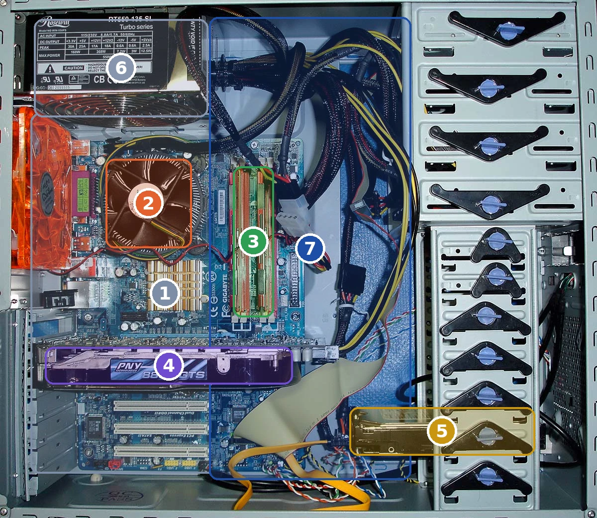

Technologie · classe de 5e
Du boîtier ouvert au poste qui dialogue avec vous
Séance 1 — Les composants internes
Séance 2 — Le démarrage et le système d'exploitation
La progression
Processeur, mémoire vive, disque, carte mère, bus, alimentation, carte graphique : chaque pièce a un rôle, et une seule fonction principale.
Du bouton d'allumage à l'ouverture de la session : six étapes, et un logiciel qui fait le lien entre le matériel et vous.
Les périphériques sont les points de contact : ils entrent, ils sortent, et leur forme décide de votre confort.
À la fin des trois séances, vous saurez expliquer tout le poste : ce qu'il y a dedans, ce qu'il fait quand on l'allume, et comment on lui parle.
Situation de départ
Un poste informatique pèse quelques kilos et pourtant il calcule, affiche, mémorise et communique.
Combien de composants différents, à votre avis, à l'intérieur de ce boîtier ? Écrivez votre estimation : nous la vérifierons après les vidéos.
Une tour ouverte, photographiée : sept zones numérotées, à retrouver dans la légende.

| Composant | Rôle en une phrase |
|---|---|
| 🧠Processeur | Exécute les instructions et effectue les calculs. |
| ⚡Mémoire vive | Garde le travail en cours ; son contenu s'efface quand on coupe le courant. |
| 💾Disque / SSD | Conserve les fichiers et les programmes, même hors tension. |
| 🔌Carte mère | Supporte et relie les composants : sans elle, aucun échange. |
| 🛣️Bus de données | Transporte les informations d'un composant à l'autre. |
| 🔋Alimentation | Fournit l'énergie électrique à toutes les cartes. |
| 🖼️Carte graphique | Calcule l'image, puis l'envoie à l'écran. |
Un poste affiche « aucun système d'exploitation détecté ». À quelle étape s'est-il arrêté, et comment le savez-vous ?
Chaque couche s'appuie sur celle du dessous.
Un élève trouve un poste encore connecté avec le compte d'un camarade. Que risque-t-il, et que doit-il faire ?